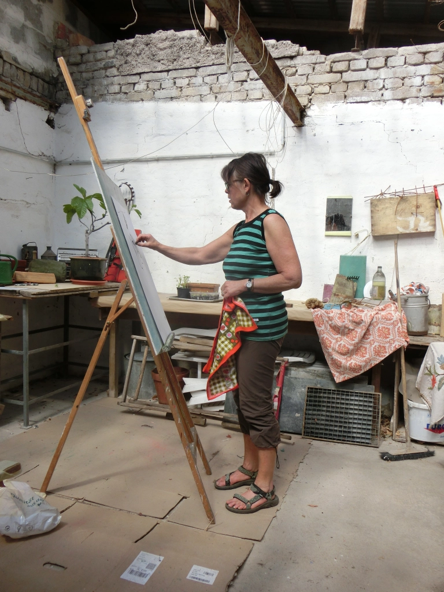

Vita
Künstlerischer Werdegang
Geboren in Schwabach, als Jugendliche erste prägende Begegnung mit originalen Kunstwerken von Monet und Turner in der Londoner Tate. Seitdem permanente autodidaktische Beschäftigung mit Zeichnung und Malerei.
Ende der Neunziger Jahre Beginn der kontinuierlichen Weiterbildung in verschiedenen künstlerischen Techniken, u.a. an der Europäischen Akademie für Bildende Kunst Trier, der Bundesakademie für kulturelle Bildung Wolfenbüttel und der Thüringischen Sommerakademie für Bildende Kunst.
Wichtige Lehrer/innen sind neben anderen Joe Allen, Birgit Bellmann, Claudia Chaseling, Silke Leverkühne, Markus Tepe und Jobst Tilmann.
Lebt und arbeitet seit 2002 in Nürnberg und in Böhlen/Thüringen. Von 2014 – 2019 Assistentin der künstlerischen Leitung bei der Thüringischen Sommerakademie für Bildende Kunst, 2020 bei den Kinderkunstwochen Nürnberg (Komiki).
2009-2020 regelmäßige Beteiligung an diversen Gruppenausstellungen in Thüringen, 2021 erste Einzelausstellung („WOHER – WOHIN… 20 Jahre Atelier Fabrikhof Böhlen“)
2021 Aufgabe des langjährigen eigenen Ateliers in Thüringen, lebt und arbeitet seitdem wieder in Schwabach.
2024 Ausstellungsbeteiligung an der FAZIT zum Abschluss des Studiums Bildende Kunst an der Akademie Faber-Castell in Stein.
